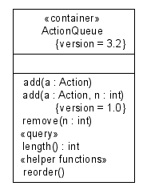

Last change: Tuesday, November 27, 2007 9:46 am
Last change: Tuesday, November 27, 2007 9:46 am
Unless otherwise expressly stated, all original material on this page created by Diomidis Spinellis is licensed under a Creative Commons Attribution-Share Alike 3.0 Greece License.
/*
* Class stereotypes and tagged values
* UML User Guide p. 439
*/
/**
* @opt attributes
* @opt operations
* @opt types
* @hidden
*/
class UMLOptions {}
/** @hidden */
class Action {}
/**
* @stereotype container
* @tagvalue version 3.2
*/
class ActionQueue {
void add(Action a) {};
/** @tagvalue version 1.0 */
void add(Action a, int n) {};
void remove(int n) {};
/** @stereotype query */
int length() {};
/** @stereotype "helper functions" */
void reorder() {};
}
|  |
| Contents | « Previous Next (Class Diagram Example: Fonts, Colors, Global and Local Options) » |
Last change: Tuesday, November 27, 2007 9:46 am
Unless otherwise expressly stated, all original material on this page
created by Diomidis Spinellis is licensed under a
Creative Commons Attribution-Share Alike 3.0 Greece License.